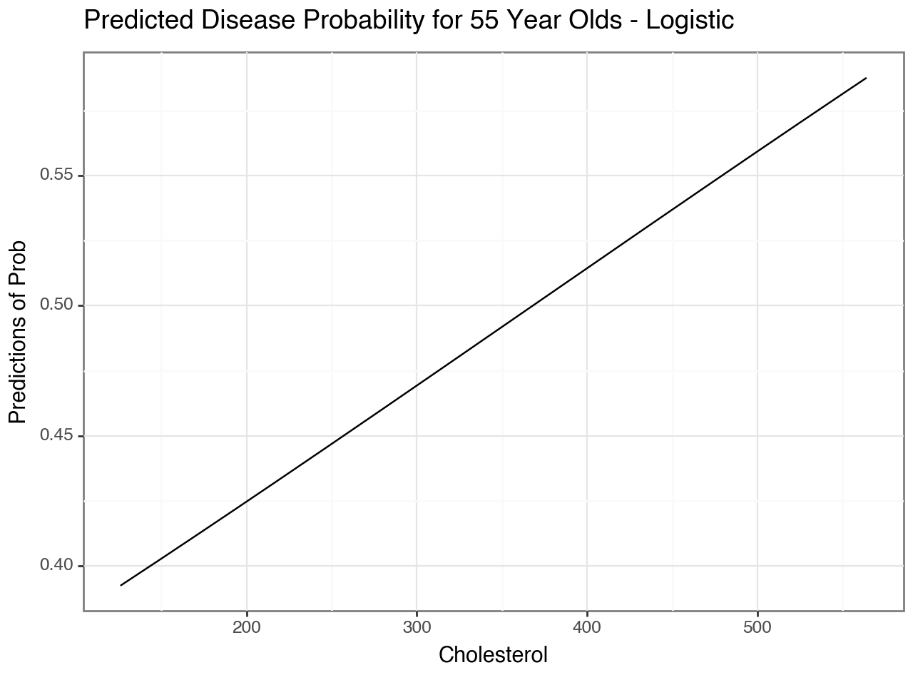
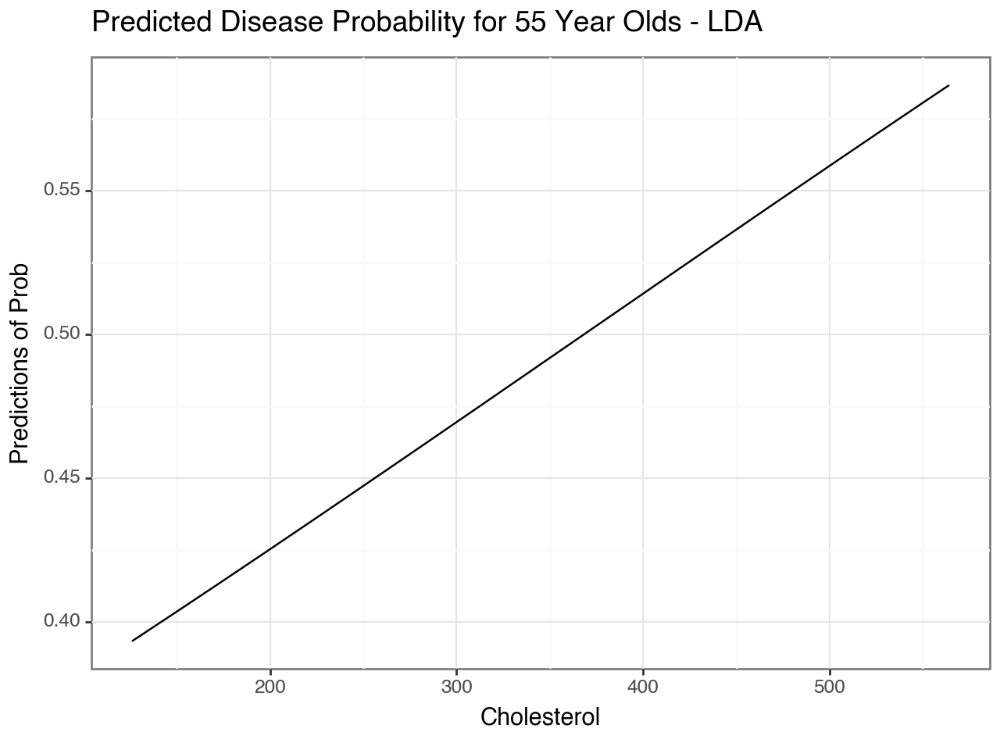
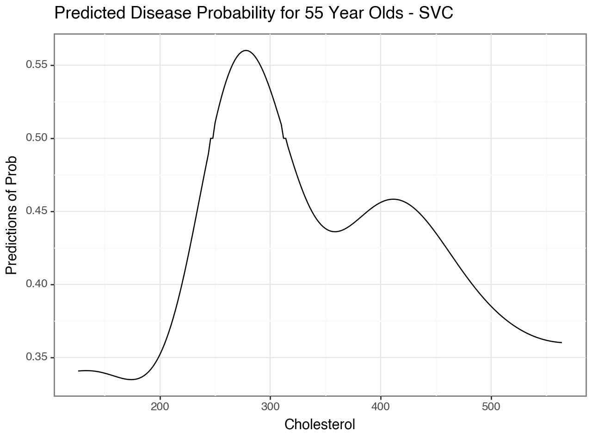
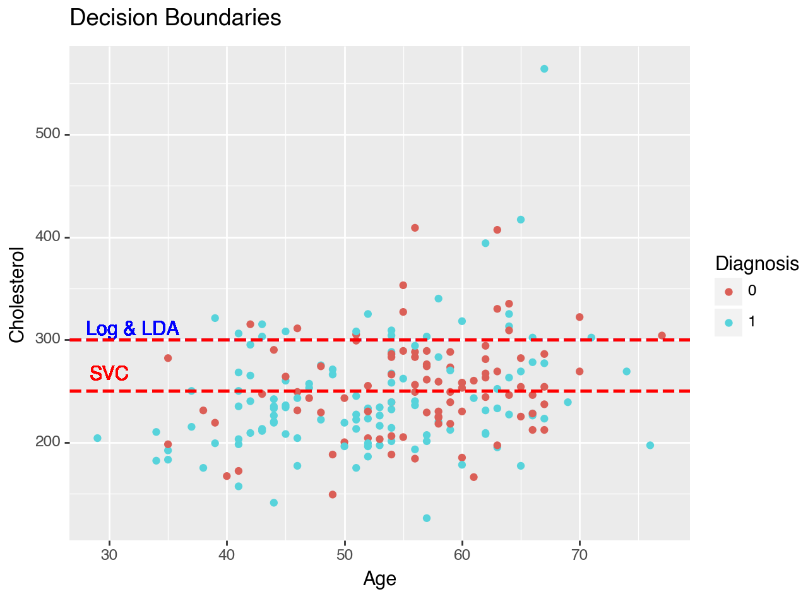

import pandas as pd
import numpy as np
from sklearn.pipeline import Pipeline
from sklearn.compose import make_column_selector, ColumnTransformer
from sklearn.preprocessing import StandardScaler, OneHotEncoder, PolynomialFeatures
from sklearn.linear_model import LogisticRegression
from sklearn.discriminant_analysis import LinearDiscriminantAnalysis
from sklearn.model_selection import train_test_split, cross_val_score, GridSearchCV
from sklearn.metrics import *
from sklearn.svm import SVC
from plotnine import *The Data
At this link, you will find a dataset containing information about heart disease patients: https://www.dropbox.com/scl/fi/0vrpdnq5asmeulc4gd50y/ha_1.csv?rlkey=ciisalceotl77ffqhqe3kujzv&dl=1
A description of the original dataset can be found here: https://archive.ics.uci.edu/dataset/45/heart+disease (However, this dataset has been cleaned and reduced, and the people have been given fictious names.)
1. Logistic Regression
Fit a Logistic Regression using only age and chol (cholesterol) as predictors.
For a 55 year old, how high would their cholesterol need to be for the doctors to predict heart disease is present?
How high for the doctors to estimate a 90% chance that heart disease is present?
data = pd.read_csv("/Users/rileysvensson/Desktop/GSB_544/Practice_Activties/ha_1.csv")
ha_1 = pd.DataFrame(data)
# Preprocessing
X = ha_1.drop(["diagnosis"], axis = 1)
y = ha_1["diagnosis"]
ct_2 = ColumnTransformer(
[("standardize", StandardScaler(), ["age", "chol"])],
remainder='drop'
)
logistic_pipeline_1 = Pipeline(
[("preprocessing", ct_2),
("logistic", LogisticRegression())]
)
#
log_pipeline_fitted_best = logistic_pipeline_1.fit(X, y)
# 55 yr old, how high to predict Disease present.
# Rows of 55 yr olds, with ranging cholesterol's 126 to 564 by 2, predict probabilities for all of them, and graph it
ha_1['chol'].max() # 564
ha_1['chol'].min() # 126
cholesterol_values = list(range(126, 566, 2))
data = pd.DataFrame({'age': [55] * len(cholesterol_values), 'chol': cholesterol_values})
y_probs_log = log_pipeline_fitted_best.predict_proba(data)[:, 1]
# Add the predicted probabilities to the DataFrame
data['predicted_disease_probability'] = y_probs_log
# Creating a plot
(
ggplot(data, aes(x='chol', y='predicted_disease_probability')) +
geom_line() +
theme_bw() +
labs(
title="Predicted Disease Probability for 55 Year Olds",
x="Cholesterol",
y="Predictions of Prob"))

<Figure Size: (640 x 480)># Find the row where 'predicted_disease_probability' is closest to 0.5
closest_to_50 = data.iloc[(data['predicted_disease_probability'] - 0.5).abs().argsort()[:1]]
closest_to_50| age | chol | predicted_disease_probability | |
|---|---|---|---|
| 121 | 55 | 368 | 0.500006 |
The cutoff for cholesterol at which doctors would predict a heart disease present is 368 for our Logistic Model.
2. Linear Discriminant Analysis
Fit an LDA model using only age and chol (cholesterol) as predictors.
For a 55 year old, how high would their cholesterol need to be for the doctors to predict heart disease is present?
# Preprocessing
ct_2 = ColumnTransformer(
[("standardize", StandardScaler(), ["age", "chol"])],
remainder='drop'
)
lda_pipeline_1 = Pipeline(
[("preprocessing", ct_2),
("lda", LinearDiscriminantAnalysis())]
)
#
lda_pipeline_fitted_best = lda_pipeline_1.fit(X, y)
# 55 yr old, how high to predict Disease present.
# Rows of 55 yr olds, with ranging cholesterol's 126 to 564 by 2, predict probabilities for all of them, and graph it
ha_1['chol'].max() # 564
ha_1['chol'].min() # 126
cholesterol_values = list(range(126, 566, 2))
data_lda = pd.DataFrame({'age': [55] * len(cholesterol_values), 'chol': cholesterol_values})
y_probs_lda = lda_pipeline_fitted_best.predict_proba(data_lda)[:, 1]
# Add the predicted probabilities to the DataFrame
data_lda['predicted_disease_probability'] = y_probs_lda
# Creating a plot
(
ggplot(data_lda, aes(x='chol', y='predicted_disease_probability')) +
geom_line() +
theme_bw() +
labs(
title="Predicted Disease Probability for 55 Year Olds - LDA",
x="Cholesterol",
y="Predictions of Prob"))

<Figure Size: (640 x 480)># Find the row where 'predicted_disease_probability' is closest to 0.5
closest_to_50_lda = data.iloc[(data_lda['predicted_disease_probability'] - 0.5).abs().argsort()[:1]]
closest_to_50_lda| age | chol | predicted_disease_probability | |
|---|---|---|---|
| 121 | 55 | 368 | 0.500006 |
3. Support Vector Classifier
Fit an SVC model using only age and chol as predictors. Don’t forget to tune the regularization parameter.
For a 55 year old, how high would their cholesterol need to be for the doctors to predict heart disease is present?
# Preprocessing
ct_2 = ColumnTransformer(
[("standardize", StandardScaler(), ["age", "chol"])],
remainder='drop'
)
svc_pipeline_1 = Pipeline(
[("preprocessing", ct_2),
("svc", SVC(probability = True))]
)
# SVC
parameters_svc = {'svc__C': (0.001, 0.01, 0.1, 1, 10, 100)}
gscv = GridSearchCV(svc_pipeline_1, parameters_svc, cv = 5, scoring='f1_macro')
gscv_fitted_svc = gscv.fit(X, y)
gscv_fitted_svc.cv_results_
means_svc = gscv_fitted_svc.cv_results_['mean_test_score']
params = gscv_fitted_svc.cv_results_['params']
best_model_svc = {'x': params, 'f1_macro': means_svc}
best_model_svc = pd.DataFrame(best_model_svc)
pd.set_option('display.max_colwidth', None)
best_model_svc = best_model_svc.sort_values(by = "f1_macro", ascending = False)
best_model_svc| x | f1_macro | |
|---|---|---|
| 3 | {'svc__C': 1} | 0.598417 |
| 4 | {'svc__C': 10} | 0.541518 |
| 5 | {'svc__C': 100} | 0.515810 |
| 2 | {'svc__C': 0.1} | 0.400847 |
| 0 | {'svc__C': 0.001} | 0.360516 |
| 1 | {'svc__C': 0.01} | 0.360516 |
# Retune Pipeline with optimal C value
svc_pipeline_best = Pipeline(
[("preprocessing", ct_2),
("svc", SVC(C = 1, probability = True))]
)
svc_pipeline_fitted_best = svc_pipeline_best.fit(X, y)
# 55 yr old, how high to predict Disease present.
# Rows of 55 yr olds, with ranging cholesterol's 126 to 564 by 2, predict probabilities for all of them, and graph it
ha_1['chol'].max() # 564
ha_1['chol'].min() # 126
cholesterol_values = list(range(126, 566, 2))
data_svc = pd.DataFrame({'age': [55] * len(cholesterol_values), 'chol': cholesterol_values})
y_probs_svc = svc_pipeline_fitted_best.predict_proba(data_svc)[:, 1]
# Add the predicted probabilities to the DataFrame
data_svc['predicted_disease_probability'] = y_probs_svc
# Creating a plot
(
ggplot(data_svc, aes(x='chol', y='predicted_disease_probability')) +
geom_line() +
theme_bw() +
labs(
title="Predicted Disease Probability for 55 Year Olds - SVC",
x="Cholesterol",
y="Predictions of Prob"))

<Figure Size: (640 x 480)>From the plot above, it is clear that the Support Vector Model would classify patients with heart disease if they fall within the cholesterol range of 250 to around 310.
4. Comparing Decision Boundaries
Make a scatterplot of age and chol, coloring the points by their true disease outcome. Add a line to the plot representing the linear separator (aka decision boundary) for each of the three models above.
(ggplot(ha_1, aes(x='age', y='chol', color='factor(diagnosis)')) +
geom_point() +
labs(title = "Decision Boundaries", color='Diagnosis', y="Cholesterol", x="Age") +
geom_hline(yintercept=300, linetype="dashed", color="blue", size=1) +
geom_text(label="Log & LDA", y=300, x=32, color="blue", va='bottom') +
geom_hline(yintercept=250, linetype="dashed", color="red", size=1) +
geom_hline(yintercept=300, linetype="dashed", color="red", size=1) +
geom_text(label="SVC", y=275, x=30, color="red", va='top'))

<Figure Size: (640 x 480)>